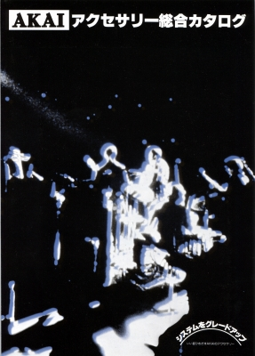
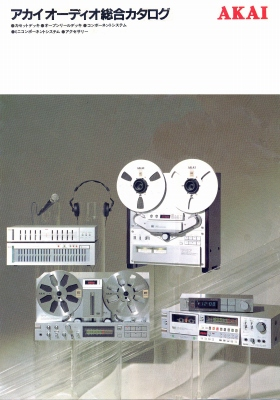
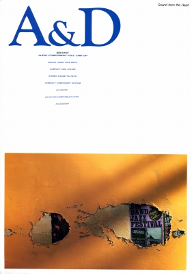

AKAI カタログギャラリー
(カタログ画像をクリックすると原寸大のPDFファイルが開きます）
�@1978年アクセサリー総合カタログ 得意としていたオープンリール・デッキ等のアクセサリーカタログ。

�A1981年総合カタログ 表紙を含め全10ページ中5ページがオープン及びカセットデッキ関連のカタログ。

�B1987年11月総合カタログ A&Dブランド発足直後のカタログ。ヘッドフォンの記述はほとんどない。

アカイのインデックスへ